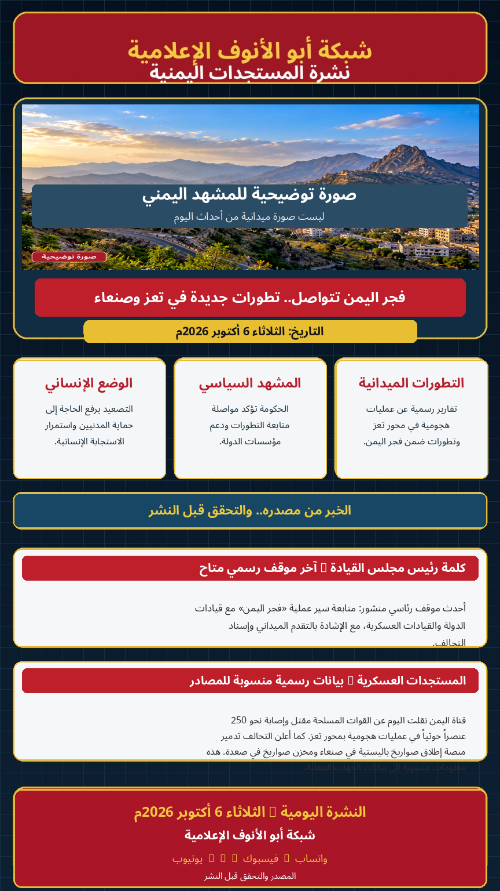

الصورة الرئيسية توضيحية وليست صورة ميدانية من أحداث اليوم.
فجر اليمن تتواصل.. تطورات جديدة في تعز وإعلانات عن استهداف قدرات صاروخية
تتواصل عملية «فجر اليمن» وفق بيانات الجهات الحكومية والعسكرية، مع إعلان القوات المسلحة تطورات ميدانية في محور تعز، وإعلان التحالف استهداف منصة إطلاق صواريخ باليستية في صنعاء ومخزن صواريخ في صعدة.
أفادت قناة اليمن، نقلاً عن القوات المسلحة، بمقتل نحو 100 وإصابة 150 من عناصر الحوثيين خلال عمليات هجومية في محور تعز ضمن عملية «فجر اليمن». الأرقام منسوبة إلى المصدر الرسمي ولم يتحقق منها بشكل مستقل.
أعلن تحالف دعم الشرعية تدمير منصة لإطلاق الصواريخ الباليستية في صنعاء ومخزن يضم 20 صاروخاً باليستياً في موقع جبلي بصعدة. هذا ادعاء رسمي منسوب إلى المتحدث باسم التحالف.
أحدث موقف رئاسي منشور: متابعة رئيس مجلس القيادة لسير عملية «فجر اليمن» مع قيادات الدولة والقيادات العسكرية، والإشادة بالتقدم الميداني وإسناد التحالف.
أكد رئيس هيئة الأركان العامة أن عملية «فجر اليمن» مستمرة حتى تحقيق أهدافها، فيما نشرت قناة اليمن اليوم تحديثات عسكرية منسوبة للقوات المسلحة بشأن محور تعز.
🟢 بيانات الجهات الرسمية: منشورة ومنسوبة إلى مصادرها.
🟡 الأرقام والنتائج العسكرية: تُعرض كبيانات رسمية منسوبة، وليست تحققاً ميدانياً مستقلاً.
🔵 الصورة الرئيسية: توضيحية وليست صورة من موقع الحدث.